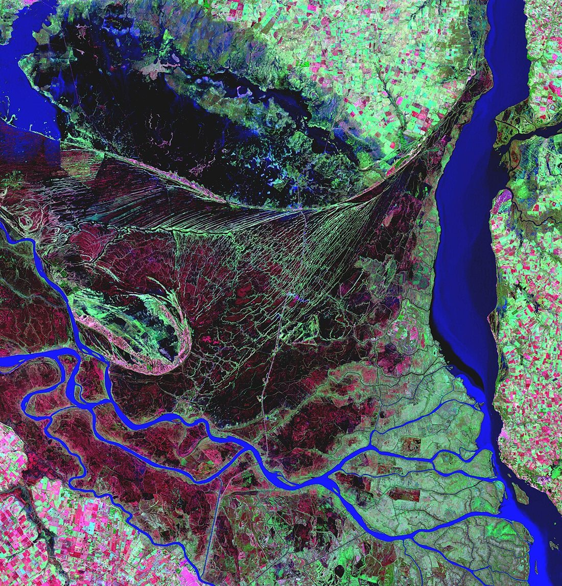

Cómo un río dibuja su cauce; el Delta del Paraná
Visto desde un avión, un río de llanura casi nunca va derecho. Serpentea, se dobla sobre sí mismo y, al llegar al mar, se abre en brazos. Ni el agua ni el terreno tienen una intención: el dibujo sale de una interacción entre el flujo y el material que transporta. Y una de las claves la dio, en 1926, alguien a quien no solemos asociar con los ríos: Albert Einstein.
En un río, la velocidad no es la misma en toda la sección: la fricción la frena en el fondo y en las orillas. La fórmula de Manning resume esa fricción en un promedio, pero el promedio esconde algo importante. En una curva, el agua no solo avanza: también gira en la sección, en lo que se llama flujo secundario.
Einstein lo explicó con la misma idea de la paradoja de las hojas de té. En una curva aparece una fuerza centrífuga hacia el exterior, pero es menor en el fondo, donde la fricción frena la corriente [1]. El resultado es una circulación: el agua rápida de arriba y del centro va hacia la orilla exterior, y la orilla interior recibe agua lenta que viene del fondo [1]. Por eso la erosión es más intensa en la orilla exterior [1].
Una curva con autos: en una curva cerrada, los autos más rápidos se abren hacia afuera, y los lentos se quedan adentro. En el río, el agua más rápida se abre, golpea la orilla exterior y la va comiendo. El agua lenta del interior deja caer lo que lleva. Una orilla pierde, la otra gana, y la curva crece.
Ahí está el mecanismo de crecimiento: cualquier pequeña curva tiende a acentuarse. Einstein agregó detalles finos [1]. El flujo secundario tarda en armarse, así que la erosión máxima no se da en el punto de mayor curvatura, sino un poco aguas abajo, y por eso los meandros avanzan en el sentido de la corriente. Además, cuanto mayor es la sección del río, más lentamente apaga la fricción ese flujo, y por eso la longitud de onda de los meandros crece con el tamaño del río [1].
Victor Ponce, de la Universidad Estatal de San Diego, destaca que la atribución de corrientes secundarias a la fuerza de Coriolis por parte de Einstein fue una de las primeras, y su explicación de la formación de meandros por un equilibrio entre fuerzas de inercia y de fricción [2]. Einstein también recordaba la ley de Baer: los ríos del hemisferio norte tienden a erosionar la orilla derecha y los del sur, la izquierda [1]. El hijo de Einstein, Hans Albert, se dedicó justamente a la hidráulica fluvial y a la ingeniería de sedimentos [2].
Un río lleva sedimento mientras tiene velocidad. Al entrar en un lago o en un mar, la corriente se abre y se frena, y el material cae: primero el más grueso, después el fino. Sobre lo depositado, el agua se reparte en brazos, cada uno con menos capacidad de arrastre, y el proceso se repite. Así crece un delta hacia afuera (un razonamiento propio a partir de la dinámica del transporte).
El Paraná es uno de los ríos más grandes del mundo, y su caudal es el tercero de Sudamérica [3]. Según Julián Cortese, del Instituto Nacional del Agua, su delta ha estado avanzando sobre las aguas del Río de la Plata durante siglos, modificando sustancialmente el ambiente de la región [4]. Las simulaciones de ese trabajo muestran que, en un escenario de base, el frente sigue avanzando mucho hasta el año 2100, sobre todo frente a la costa argentina, aunque su crecimiento parece aminorar desde 2070, excepto en esa región [4].

Dibujar un paisaje con un fluido: en un meandro y en un delta, lo que importa no es solo cómo se mueve el agua, sino cómo su movimiento cambia el borde que la contiene. El contorno del río no está dado: lo escribe el propio flujo. Por eso, estos problemas se resuelven acoplando la hidráulica con el transporte de sedimentos (un comentario propio).
Los meandros crecen porque el flujo secundario en una curva lleva agua rápida contra la orilla exterior, la erosiona y deposita sedimento en la interior. Los deltas crecen porque el río se frena al llegar al mar y deja caer lo que trae. El río dibuja su propio cauce, y el Delta del Paraná es un ejemplo a escala de siglos, que sigue en marcha.
Pregunta para la comunidad: Un meandro que crece puede cortarse a sí mismo en una crecida y dejar un lago en forma de herradura. ¿Por qué el río preferiría ese atajo? Pensá en la pendiente y en la pérdida de carga.